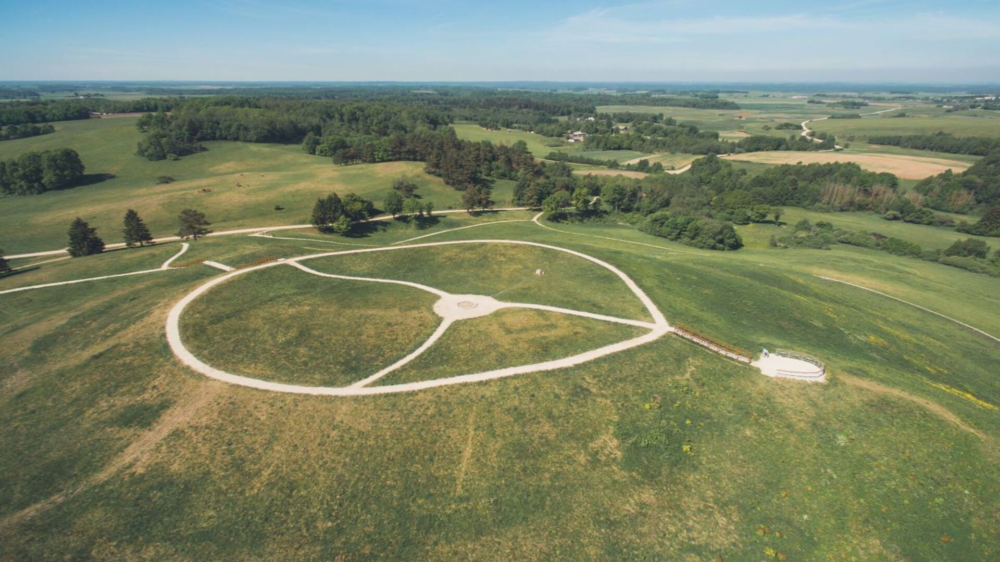

Lietuvos Piliakalniai – Istorijos ir Gamta Vienoje Vietoje
Lietuva garsėja savo unikalia istorija, o piliakalniai – vieni iš svarbiausių šios praeities liudininkų. Mūsų šalyje yra daugiau nei 850 piliakalnių, kurie išsidėstę vaizdingose vietovėse, apsupti miškų, upių ir ežerų. Kiekvienas piliakalnis slepia savitą istoriją – nuo senovės genčių gyvenviečių iki gynybinių tvirtovių, kurios gynė Lietuvos žemes nuo priešų.
Piliakalniai ne tik pasakoja apie praeitį, bet ir yra mėgstamos lankytinos vietos gamtos bei istorijos mylėtojams. Čia galite atrasti ne tik įspūdingą kraštovaizdį, bet ir pajusti ryšį su protėvių paveldu. Keliaukite, atraskite ir pažinkite – kiekvienas piliakalnis turi ką papasakoti!
Lietuvos piliakalniai

Šatrijos piliakalnis
Šatrija – vienas žymiausių archeologinių paminklų Lietuvoje, garsėjantis gausiais radiniais, tokiais kaip IX–XII a. degintiniai kapai, laidojimo urnos, gintaro ir stiklo papuošalai bei akmens kirvukai. Archeologai mano, kad kalvos viršuje stovėjo medinė pilis, o pašlaitėje žmonės gyveno jau nuo II a. pr. Kr. Manoma, jog čia buvo vienas svarbiausių senovės lietuvių tikėjimo centrų, sunaikintas su krikščionybės įvedimu. Simonas Daukantas ir Motiejus Valančius savo veikaluose minėjo, kad pirmieji Žemaičių vyskupystės kunigai rezidavo Luokėje, prižiūrėdami šventvietę.

Merkinės piliakalnis
Merkinės piliakalnis, esantis ties Nemuno ir Merkio santaka, tapo Dainavos krašto simboliu. Piliakalnis stūkso kairiajame Stangės upelio krante, apsuptas Nemuno ir Stangės slėnių, o jo šlaitai siekia iki 30 m aukščio. Manoma, kad Merkinės pilis buvo pastatyta XIII a. viduryje ir XIV–XV a. pradžioje tapo svarbiausiu Panemunės kariniu ir strateginiu centru kovose su Livonijos ordinu. Pilis, dažnai minima kryžiuočių kronikose „Merkenpille“ ir „Merkenpil“, buvo užimta 1391 m. ir 1394 m. sudeginta, o vėliau dar kartą sugriauta kryžiuočių 1403 m.

Medvėgalio piliakalnis
Medvėgalis, aukščiausias Žemaitijos kalnas (234 m), laikomas šio krašto kalvų karaliumi. Tai centrinė ir žymiausia tvirtovė, kuri gynė Žemaitiją nuo kryžiuočių antpuolių. Medvėgalio archeologinį kompleksą sudaro keli svarbūs kalnai, tokie kaip Medvėgalis, Pilies, Piliorių, Alkos, Ąžuolų ir Sumonų kalvos, taip pat kūlgrinda.

Rambyno kalnas
Rambyno piliakalnis, įsikūręs Nemuno dešiniojo kranto aukštumoje, buvo įrengtas su pylimu, tačiau dėl Nemuno erozijos daug duomenų apie jį neišliko. 1835 m. naktį į Nemuną nugriuvo šiaurinis šlaitas, o mažesnė griūtis įvyko 1878 m. Šiuo metu išlikusi tik kalvos šiaurinė papėdė, apaugusi mišku, su stačiu šlaitu, besileidžiančiu į Nemuno slėnį. Ant kalno stovėjo skalvių pilis Ramigė, kurią 1276 m. sugriovė kryžiuočiai. Rambyno kalno aukštis – 46 m, o aukščiausioje vietoje įrengta apžvalgos aikštelė su laiptais.

Seredžiaus piliakalnis
Seredžiaus miestelyje, prie Nemuno ir Dubysos santakos, stūkso Palemono kalnas, siejamas su legendiniu Lietuvos įkūrėju Palemonu ir senovės apeigomis. Archeologiniai radiniai rodo, kad čia pilis stovėjo jau I tūkstantmetyje. 1293 m. ant piliakalnio buvo pastatyta lietuvių Pieštvės pilis, kuri atliko svarbų vaidmenį gynyboje nuo Kryžiuočių. Pilis dažnai buvo puolama, kol galiausiai 1363 m. sugriauta. Apie šiuos įvykius rašoma viduramžių kronikose, tokiose kaip Petro Dusburgiečio ir Vygando Marburgiečio metraščiai.

Bakainių piliakalnis
Bakainių piliakalnis, esantis Krekenavos regioniniame parke, laikomas vienu gražiausių Nevėžio intako Liaudės upės vingyje. Iš trijų pusių upelio juosiamas piliakalnis datuojamas II tūkstantmečio pradžia – XV a. ir, manoma, buvo Upytės žemės centras. Kai kurie tyrinėtojai jį sieja su Eigintų pilimi, kurią kryžiuočiai sudegino 1372 m., kiti – su istoriniais Sosiais. Netoliese buvęs kapinynas liudija apie senovės gyventojų palikimą. 1997 m. piliakalnis įtrauktas į Lietuvos kultūros vertybių registrą, o vėliau pripažintas valstybės saugomu objektu. Šis gamtos ir istorijos persmelktas kampelis ne tik žavi lankytojus, bet ir atgyja per šventes, kai ant kalno liepsnoja laužai, o slėniais vilnija dainos.

Žvelgaičio piliakalnis
Žvelgaičio piliakalnis – įspūdinga ozo dalis ir senųjų žiemgalių gyvenvietė, pavadinta lietuvių kunigaikščio Žvelgaičio vardu. XIII-XVII a. čia stovėjo mediniai pastatai, o archeologiniai radiniai liudija apie įvairius gyvenimo laikotarpius. Kunigaikštis Žvelgaitis, valdęs šią vietovę, 1205 m. žuvo grįždamas iš karo žygio. Piliakalnis driekiasi Švėtės upelio kairiajame krante, jo ilgis apie 830 m, aukštis – iki 20 m. XX a. piliakalnis tapo svarbia kultūrinių renginių vieta, čia vykdavo operos spektakliai, derliaus šventės ir jaunimo susibūrimai. 2012 m. įrengti laiptai, siekiant apsaugoti piliakalnio šlaitus ir palengvinti lankytojų patekimą.

Punios piliakalnis
Punios piliakalnis – vienas didžiausių ir žymiausių Lietuvoje, garsėjantis legenda apie Pilėnų gynėjus ir kunigaikštį Margirį. Po pirmosios pilies sunykimo XV–XVIII a. čia stovėjo puošni Punios valdytojų rezidencija, kurios prabangą liudija archeologiniai radiniai. Tarpukariu piliakalnio aikštelėje dar buvo ūkininkų sodybos, o žemė buvo ariama. Nuo viršūnės atsiveria įspūdinga Nemuno slėnio ir Punios šilo panorama. Nusileidus senais akmeniniais laipteliais prie Punelės, galima išgirsti Nečiuikų šaltinio krioklio melodiją.

Kartenos piliakalnis
Kartenos piliakalnis, dar vadinamas Pilies, Švedų ar Lūžties kalnu, stūkso priešais Kartenos miestelį, kitoje Minijos upės pusėje. VIII–XIII a. čia stovėjusi medinė pilis buvo svarbus kuršių Ceklio žemės gynybos centras. Legenda pasakoja, kad kadaise ant šio kalno stovėjo žemaičių karaliaus pilis, o vietovės pavadinimas kilo iš vado šūksnio: „Veizėkiet, karė tenā!“ Piliakalnis sutvarkytas 2012 m., o jį su kitomis lankytinomis vietomis jungia 2,8 km ilgio apžvalgos takai. Iš čia atsiveria nuostabi Kartenos miestelio, Minijos vingio ir slėnių panorama, kviečianti atitrūkti nuo kasdienybės.
{kind=link}